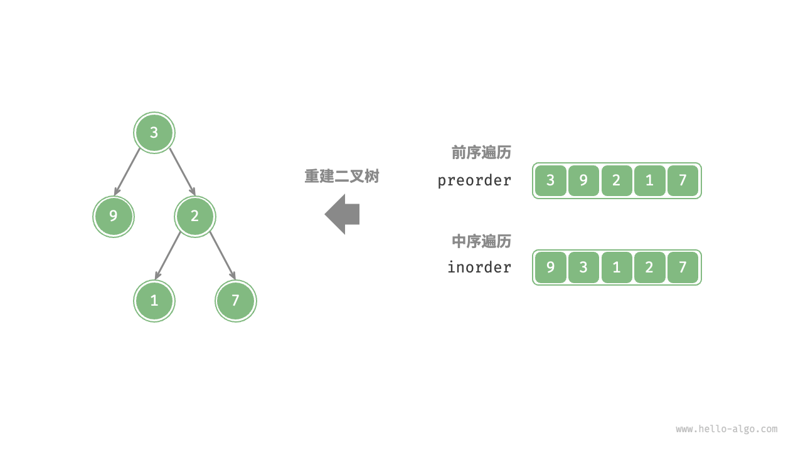
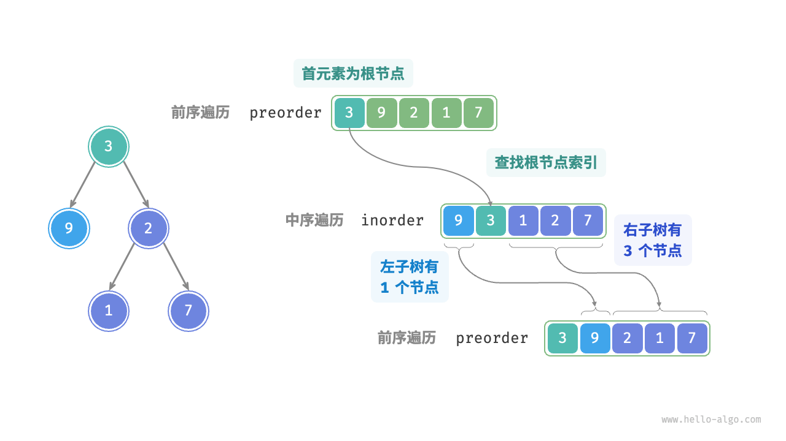
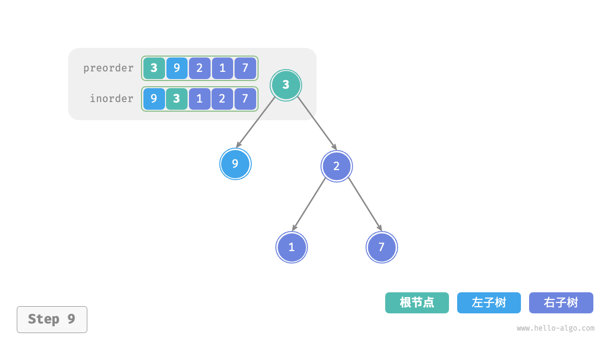
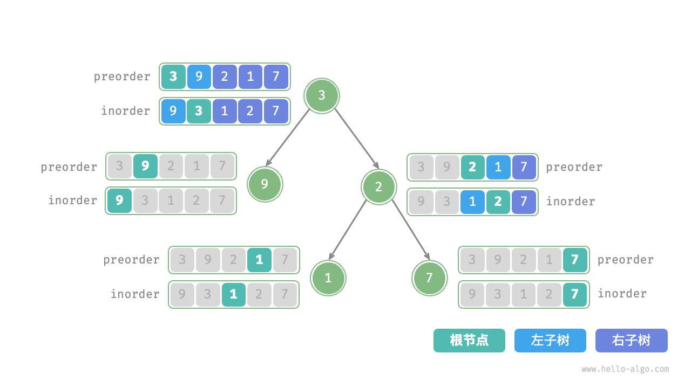

构建二叉树问题
!!! question
给定一棵二叉树的前序遍历 `preorder` 和中序遍历 `inorder` ，请从中构建二叉树，返回二叉树的根节点。假设二叉树中没有值重复的节点。

判断是否为分治问题
原问题定义为从 preorder 和 inorder 构建二叉树，是一个典型的分治问题。
- 问题可以分解：从分治的角度切入，我们可以将原问题划分为两个子问题：构建左子树、构建右子树，加上一步操作：初始化根节点。而对于每棵子树（子问题），我们仍然可以复用以上划分方法，将其划分为更小的子树（子问题），直至达到最小子问题（空子树）时终止。
- 子问题是独立的：左子树和右子树是相互独立的，它们之间没有交集。在构建左子树时，我们只需关注中序遍历和前序遍历中与左子树对应的部分。右子树同理。
- 子问题的解可以合并：一旦得到了左子树和右子树（子问题的解），我们就可以将它们链接到根节点上，得到原问题的解。
如何划分子树
根据以上分析，这道题可以使用分治来求解，但如何通过前序遍历 preorder 和中序遍历 inorder 来划分左子树和右子树呢？
根据定义，preorder 和 inorder 都可以划分为三个部分。
- 前序遍历：
[ 根节点 | 左子树 | 右子树 ]，例如上图的树对应[ 3 | 9 | 2 1 7 ]。 - 中序遍历：
[ 左子树 | 根节点 ｜ 右子树 ]，例如上图的树对应[ 9 | 3 | 1 2 7 ]。
以上图数据为例，我们可以通过下图所示的步骤得到划分结果。
- 前序遍历的首元素 3 是根节点的值。
- 查找根节点 3 在
inorder中的索引，利用该索引可将inorder划分为[ 9 | 3 ｜ 1 2 7 ]。 - 根据
inorder的划分结果，易得左子树和右子树的节点数量分别为 1 和 3 ，从而可将preorder划分为[ 3 | 9 | 2 1 7 ]。

基于变量描述子树区间
根据以上划分方法，我们已经得到根节点、左子树、右子树在 preorder 和 inorder 中的索引区间。而为了描述这些索引区间，我们需要借助几个指针变量。
- 将当前树的根节点在
preorder中的索引记为 $i$ 。 - 将当前树的根节点在
inorder中的索引记为 $m$ 。 - 将当前树在
inorder中的索引区间记为 $[l, r]$ 。
如下表所示，通过以上变量即可表示根节点在 preorder 中的索引，以及子树在 inorder 中的索引区间。
表
根节点在 preorder 中的索引 |
子树在 inorder 中的索引区间 |
|
|---|---|---|
| 当前树 | $i$ | $[l, r]$ |
| 左子树 | $i + 1$ | $[l, m-1]$ |
| 右子树 | $i + 1 + (m - l)$ | $[m+1, r]$ |
请注意，右子树根节点索引中的 $(m-l)$ 的含义是“左子树的节点数量”，建议结合下图理解。

代码实现
为了提升查询 $m$ 的效率，我们借助一个哈希表 hmap 来存储数组 inorder 中元素到索引的映射：
- "Python"
```python
def dfs(
preorder: list[int],
inorder_map: dict[int, int],
i: int,
l: int,
r: int,
) -> TreeNode | None:
"""构建二叉树：分治"""
// 子树区间为空时终止
if r - l < 0:
// 初始化根节点 root = TreeNode(preorder[i]) // 查询 m ，从而划分左右子树 m = inorder_map[preorder[i]] // 子问题：构建左子树 root.left = dfs(preorder, inorder_map, i + 1, l, m - 1) // 子问题：构建右子树 root.right = dfs(preorder, inorder_map, i + 1 + m - l, m + 1, r) // 返回根节点 return rootreturn None
def build_tree(preorder: list[int], inorder: list[int]) -> TreeNode | None: """构建二叉树""" // 初始化哈希表，存储 inorder 元素到索引的映射 inorder_map = {val: i for i, val in enumerate(inorder)} root = dfs(preorder, inorder_map, 0, 0, len(inorder) - 1) return root
- "C++"
```cpp
/* 构建二叉树：分治 */
TreeNode *dfs(vector<int> &preorder, unordered_map<int, int> &inorderMap, int i, int l, int r) {
// 子树区间为空时终止
if (r - l < 0)
return NULL;
// 初始化根节点
TreeNode *root = new TreeNode(preorder[i]);
// 查询 m ，从而划分左右子树
int m = inorderMap[preorder[i]];
// 子问题：构建左子树
root->left = dfs(preorder, inorderMap, i + 1, l, m - 1);
// 子问题：构建右子树
root->right = dfs(preorder, inorderMap, i + 1 + m - l, m + 1, r);
// 返回根节点
return root;
}
/* 构建二叉树 */
TreeNode *buildTree(vector<int> &preorder, vector<int> &inorder) {
// 初始化哈希表，存储 inorder 元素到索引的映射
unordered_map<int, int> inorderMap;
for (int i = 0; i < inorder.size(); i++) {
inorderMap[inorder[i]] = i;
}
TreeNode *root = dfs(preorder, inorderMap, 0, 0, inorder.size() - 1);
return root;
}
- "Java"
```java
/ 构建二叉树：分治 /
TreeNode dfs(int[] preorder, Map
// 初始化根节点 TreeNode root = new TreeNode(preorder[i]); // 查询 m ，从而划分左右子树 int m = inorderMap.get(preorder[i]); // 子问题：构建左子树 root.left = dfs(preorder, inorderMap, i + 1, l, m - 1); // 子问题：构建右子树 root.right = dfs(preorder, inorderMap, i + 1 + m - l, m + 1, r); // 返回根节点 return root; }return null;
/ 构建二叉树 /
TreeNode buildTree(int[] preorder, int[] inorder) {
// 初始化哈希表，存储 inorder 元素到索引的映射
Map
下图展示了构建二叉树的递归过程，各个节点是在向下“递”的过程中建立的，而各条边（引用）是在向上“归”的过程中建立的。
"<1>"
"<2>"

"<3>"

"<4>"
"<5>"
"<6>"

"<7>"
"<8>"
"<9>" 
每个递归函数内的前序遍历 preorder 和中序遍历 inorder 的划分结果如下图所示。

设树的节点数量为 $n$ ，初始化每一个节点（执行一个递归函数 dfs() ）使用 $O(1)$ 时间。因此总体时间复杂度为 $O(n)$ 。
哈希表存储 inorder 元素到索引的映射，空间复杂度为 $O(n)$ 。在最差情况下，即二叉树退化为链表时，递归深度达到 $n$ ，使用 $O(n)$ 的栈帧空间。因此总体空间复杂度为 $O(n)$ 。